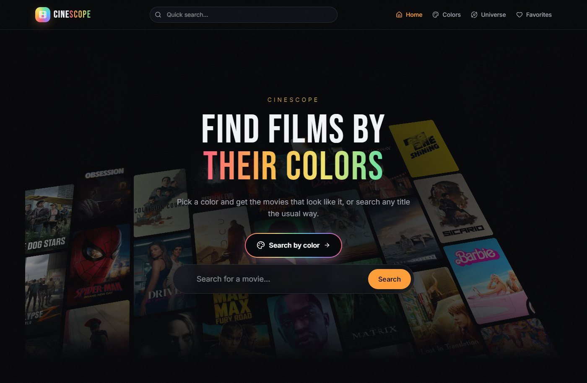
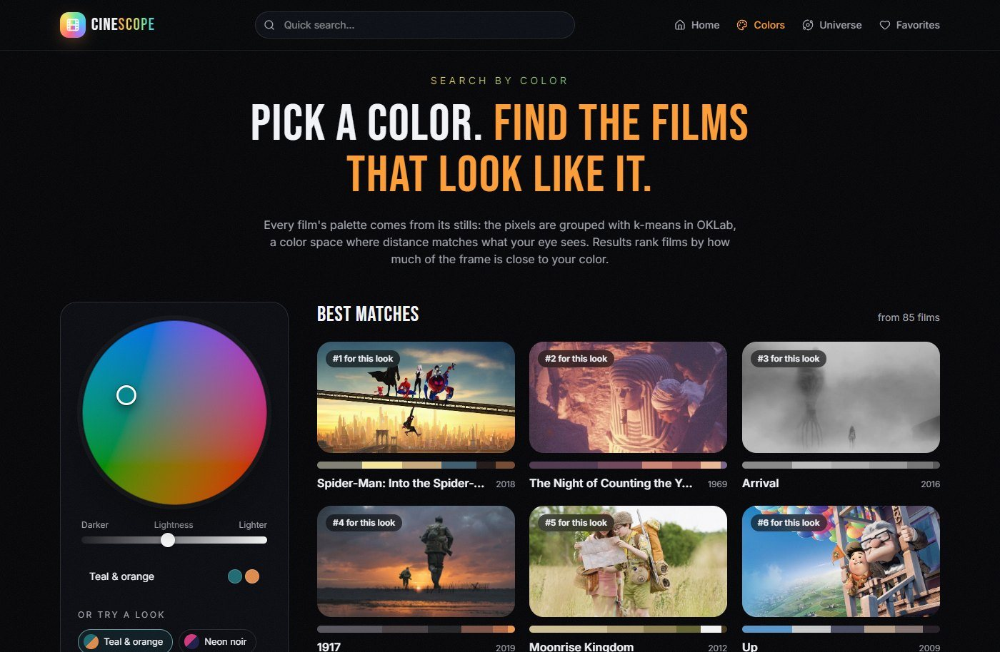
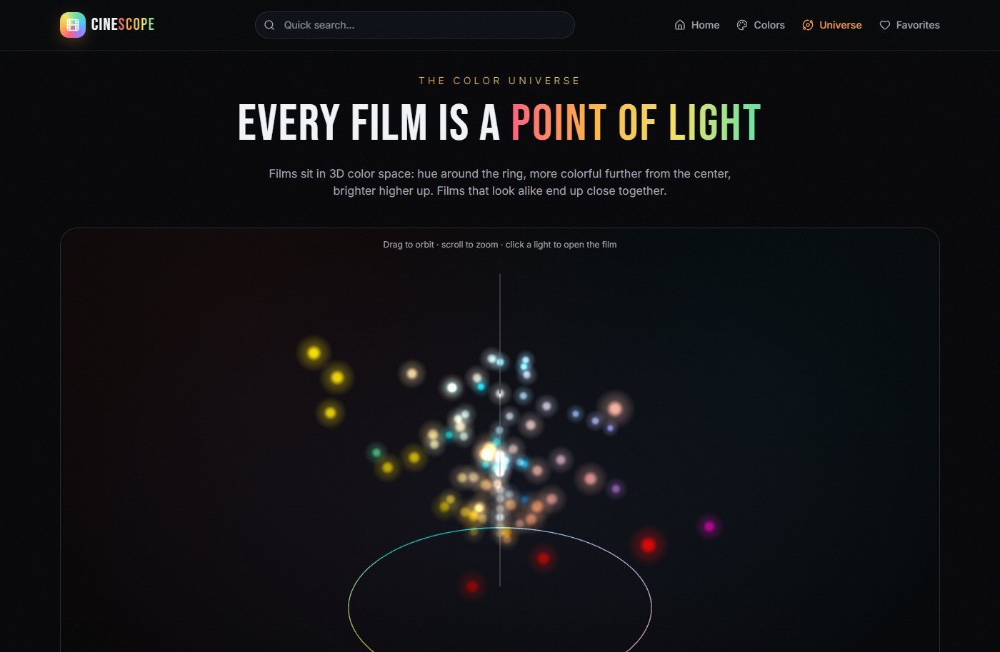
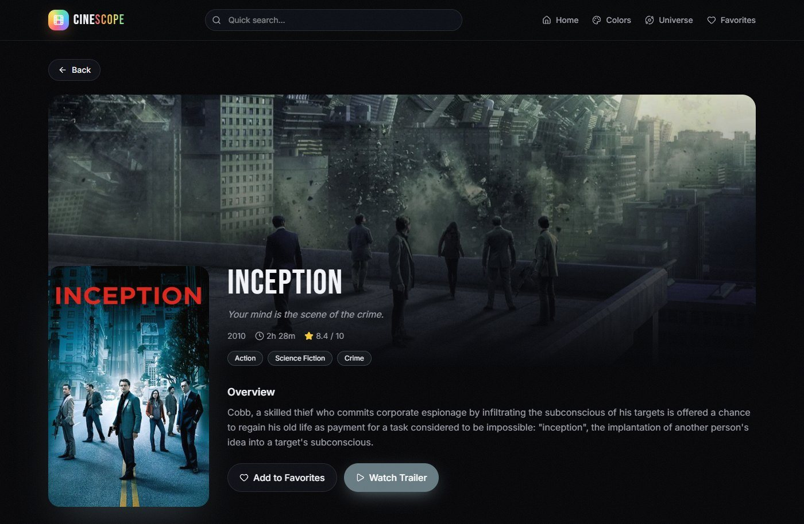

Color math that matches the eye
Distances are measured in OKLab instead of RGB, so two colors that look close are close in the numbers too. The same math ranks films, places them in 3D and picks each page's accent.
A movie app with a twist. Besides the usual search, trailers and favorites, you can pick a color, drop in a photo or fly through a 3D universe of films, and find the movies that look like it.

Movie apps let you search by title, genre or cast, but not by how a film looks, which is often what you remember about it: teal night streets, desert gold, neon.
CineScope turns each film's colors into something you can search, compare and explore, and keeps a regular movie app around it.
React and TypeScript on TanStack Start, with TanStack Query for the movie data. Each film's palette is computed ahead of time by a small build script and shipped as JSON; the browser does the color math itself in OKLab, a color space where the distance between two colors matches how different they look. The universe is a three.js scene, the poster wall is CSS 3D transforms, and pages change with the View Transitions API.
Distances are measured in OKLab instead of RGB, so two colors that look close are close in the numbers too. The same math ranks films, places them in 3D and picks each page's accent.
A dropped photo is drawn to a canvas, scaled down and grouped into a palette on the device. Nothing is uploaded, and matching takes a moment instead of a trip to a server.
The 3D poster wall, scroll reveals and page transitions follow the system's reduce-motion setting, and a Motion toggle in the footer lets anyone switch them on or off. With motion off, the 3D layout stays; only the movement stops.
A poster grows into the movie page with the View Transitions API, so you can see where you came from. Changes on the same page, like moving the color wheel, skip the transition so the page doesn't flash.
Without a TMDB key, the app runs on a curated catalog of 85 films, so the color features work anywhere, even in a fresh copy of the code.



Animations are off because your device is set to reduce motion.